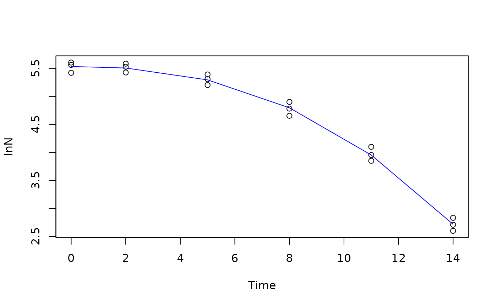

Weibull inactivation model Peleg and Huang
Source:R/weibull_inactivation_peleg_huang.R
WeibullPH.RdWeibullPH inactivation model for microbial inactivation curve.
Returns the model parameters estimated according to data collected in microbial inactivation experiments.
Arguments
- t
is a numeric vector indicating the time of the experiment
- Y0
is the base 10 logarithm of the initial (time=0) bacterial concentration
- k
is the inactivation rate ()
- alpha
is the ???
Details
The model's inputs are:
t: time, assuming time zero as the beginning of the experiment.
Y(t): the base 10 logarithm of the bacterial concentration X(t) measured at time t.
Users should make sure that the bacterial concentration input is entered in base 10 logarithm, Y(t) = log10(X(t)).
The following parameters can be estimated using Weibull function:
t: is heating time under a constant temperature
Y0: is the initial (time=0) bacterial counts in base 10 logarithm of the initial bacterial counts;
k: is the inactivation rate (log cfu/s or log cfu/min, or log cfu/h)
alpha: is the ????
References
Huang L (2009). “Thermal inactivation of Listeria monocytogenes in ground beef under isothermal and dynamic temperature conditions.” Journal of Food Engineering, 90(3), 380-387. ISSN 0260-8774, doi:10.1016/j.jfoodeng.2008.07.011 , https://www.sciencedirect.com/science/article/pii/S0260877408003439.
Author
Vasco Cadavez vcadavez@ipb.pt and Ursula Gonzales-Barron ubarron@ipb.pt
Examples
library(gslnls)
data(bixina)
initial_values = list(Y0=6.0, k=1.0, alpha=0.2)
fit <- gsl_nls(lnN ~ WeibullPH(Time, Y0, k, alpha),
data=bixina,
start = initial_values)
summary(fit)
#>
#> Formula: lnN ~ WeibullPH(Time, Y0, k, alpha)
#>
#> Parameters:
#> Estimate Std. Error t value Pr(>|t|)
#> Y0 5.533409 0.038942 142.09 < 2e-16 ***
#> k 0.005061 0.001763 2.87 0.0117 *
#> alpha 2.395348 0.131615 18.20 1.23e-11 ***
#> ---
#> Signif. codes: 0 ‘***’ 0.001 ‘**’ 0.01 ‘*’ 0.05 ‘.’ 0.1 ‘ ’ 1
#>
#> Residual standard error: 0.09671 on 15 degrees of freedom
#>
#> Number of iterations to convergence: 23
#> Achieved convergence tolerance: 2.528e-13
#>
plot(lnN ~ Time, data=bixina)
lines(bixina$Time, predict(fit), col="blue")
